houses = sm.datasets.get_rdataset("SaratogaHouses", "mosaicData").data
# 변수 설명
# print(sm.datasets.get_rdataset("SaratogaHouses", "mosaicData").__doc__)Final Exam
총점 250
A. 다음은 Houses in Saratoga County (2006) SaratogaHouses를 이용한 질문들입니다.
직접 다운로드 링크: SaratogaHouses.csv
A-1. 우선, 데이터셋 houses을 다음과 같이 필터링하여 이후 계속 사용합니다. (5)
- 집의 연령(
age)은 100년(포함) 이하이고, - 욕실의 개수(
bathrooms): 1개인 이상(> 0), 4개 미만(< 4)인 것으로 필터링하여, 이후 계속 사용합니다.
A-2. 집값(price)에 가장 크게 영향을 주는 것은 거주공간의 넓이(livingArea)인 것으로 보이는데, (20)
- 그 관계가 대략 선형인지를 확인할 수 있는 시각화를 하고 (scatterplot과 polynominal fit을 이용),
- 거주공간의 넓이(
livingArea)로 집값(price)을 예측하는 선형모형을 세우고,
- 거주공간의 넓이가 100 (square feet) 증가할 때마다 집값($)이 얼마나 증가하는지 기술하고,
- 거주공간의 넓이가 집값 변량의 몇 %를 설명해주는지 기술해보세요.
집의 연령과 집값의 관계
오래된 집일수록 가격이 낮아지는 현상이 있는데, 이는 집이 낡아서라기보다는 오래된 집들의 거주공간이 작은 경향이 있어, 간접적으로 집값이 낮아보이는 것일 수 있음을 살펴보고자 합니다.
다시 말하면, 거주공간의 넓이를 고려한 후 (혹은 거주공간의 넓이와는 독립적인) 집의 연령과 집값의 관계를 살펴봅니다.
(오른쪽 도식을 참고하세요. )
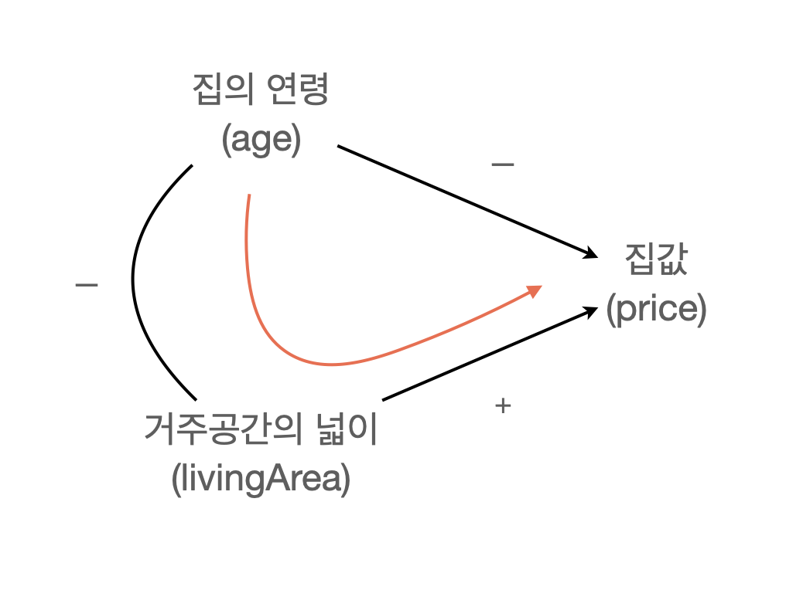
A-3. 우선, 집의 연령(age)에 따른 집값(price)의 변화를 살펴보는데, (10)
- 시각화를 이용해 그 관계를 파악하고; scatterplot과 polynominal fit을 이용
- 대략적인 경향성을 기술하고, 선형관계로 모형을 만드는 것이 적절한지 기술해보세요.
A-4. 이번에는 오래된 집일수록 거주공간도 작다는 것을 확인하는데,
- 아래와 같이 집의 연령(
age)에 따른 거주공간의 넓이(livingArea)와 집값(price)의 변화를 나란히 비교하도록 플롯을 그려보세요. (20).pair(y=['livingArea', 'price'])을 이용하고,- 관계를 파악할 수 있도록 scatterplot과 polynominal fit들을 추가하고,
.layout()를 이용하여, 플롯의 크기를 적절히 조정하세요.
- 이 플롯을 보고, 오래된 집의 가격이 낮아지는 현상에 대한 가능한 설명을 기술해보세요.
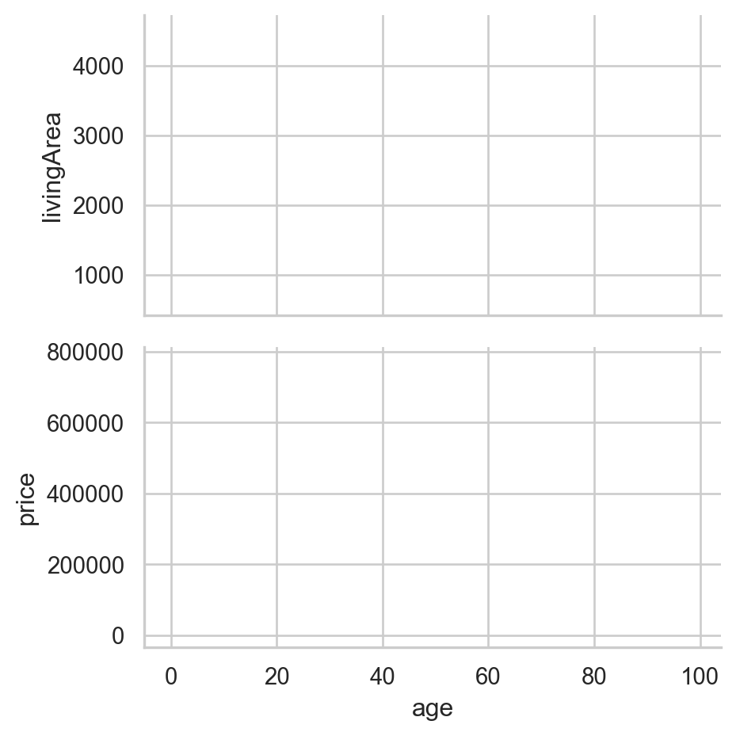
A-5. 구체적인 선형모형을 세워 위 가설을 검증해보는데, 아래 세 모형에 대한 파라미터를 확인해보고, 파라미터의 변화를 기술하여 거주공간의 넓이(livingArea)를 고려하면 집의 연령(age)이 집값에 미치는 영향이 어떠할지 다음에 따라 알아봅니다. (20)
import statsmodels.formula.api as smf
mod1 = smf.ols('price ~ livingArea', data = houses).fit()
mod2 = smf.ols('price ~ age', data = houses).fit()
mod3 = smf.ols('price ~ livingArea + age', data = houses).fit()- 집의 연령이 1년 늘때 집값이 떨어지는 정도가 mod2와 비교해서 mod3에서 추정할 때, 어떻게 바뀌는지 기술해보세요.
- 반면, 거주공간의 넓이가 1(square feet) 늘때 집값이 올라가는 정도가 mod1와 비교해서 mod3에서 추정할 때 어떻게 바뀌는지 기술해보세요.
- 왜 이런 변화가 생겼을지 앞서 알아본 (A-1) ~ (A-4)의 내용과 옆 도식을 참고해서 간단히 설명해보세요.
A-6. 다른 한편으로는 오래된 집일수록 집값이 떨어지는 것처럼 보이는 것은, 큰 집들 혹은 비싼 집들에서 심하게 나타나는 현상일 수도 있음을 살펴보고자 합니다. 다시 말하면, 작은 집들의 경우 오래되었다고 집값이 떨어지지 않을 수 있습니다. (15)
- 우선, 거주공간의 넓이(
livingArea)를 6개의 구간으로 나누어, 각 구간별로 집의 연령(age)에 따른 집값(price)의 변화를 scatterplot과 polynominal fit을 이용해 다음과 같이 확인합니다. (디테일 무시)pd.qcut()을 이용하고,- 집의 연령(
age)을 0 ~ 50년까지로 제한해서 자세히 살펴봅니다. .layout()를 이용하여, 플롯의 크기를 적절히 조정하세요.- fitted line은 3차 다항함수로 그립니다.
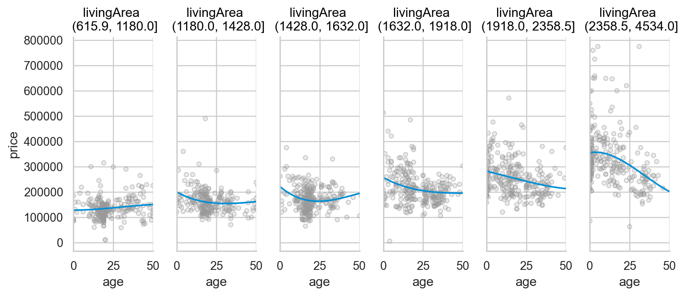
A-7. 위의 현상을 모델링하기 위해서 다음과 같이 상호작용(interaction)을 위한 추가항을 모형에 최소한으로 포함시켜야 합니다.
smf.ols('price ~ livingArea * age', data = houses)
# 또는 smf.ols('price ~ livingArea + age + livingArea:age', data = houses)- 두 예측변수의 다음 값들로
grid을 만들어, 위 모형이 예측하는 값을 아래와 같이 시각화해 보고, (디테일은 무시)
오래된 집일수록 집값이 낮아보였던 처음의 관찰에 대해 어떻게 해석할 수 있을지 간략히 설명해보세요. (20)grid를 만들기 위해itertools패키지의product()함수를 이용합니다.
# age: 0년에서 100년까지 1년 단위로
age = np.arange(0, 101)
# 거주공간의 넓이: 분포에서 10%, 25%, 50%, 75%, 90% 지점의 값들
livingArea = np.quantile(houses["livingArea"], [0.10, 0.25, 0.50, 0.75, 0.90])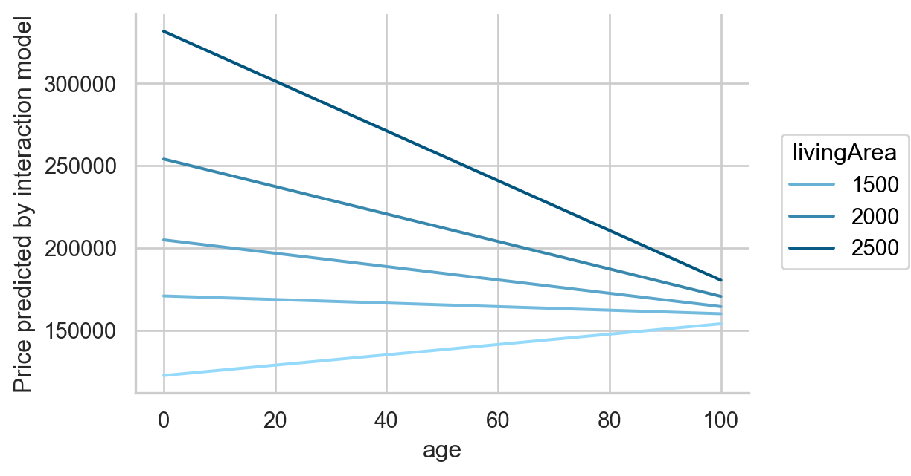
- 아래와 같이
livingArea와age의 위치를 바꿔 시각화해보고,
거주공간이 넓어질수록 가격이 높아지는 경향이 집의 연식에 따라 어떻게 달라질 수 있는지 간략히 기술해보세요. (5)
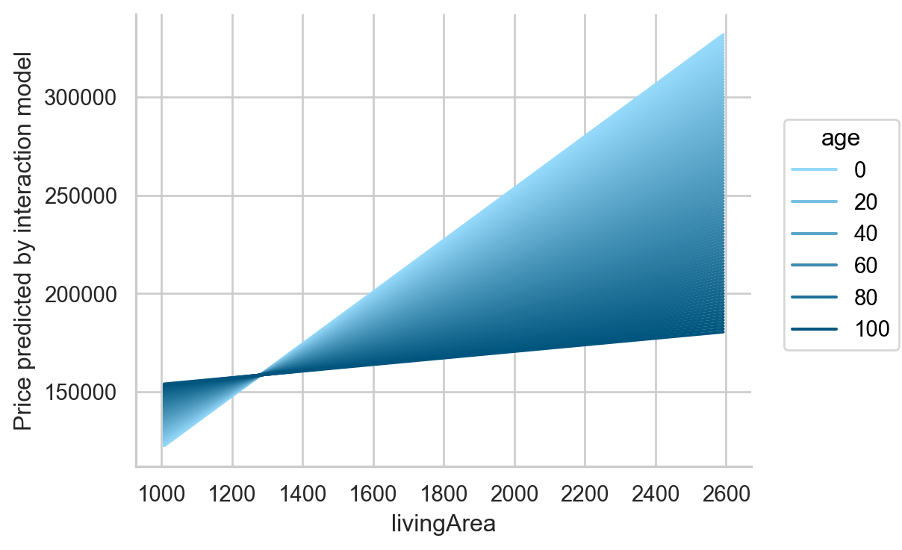
A-8. (A-7)에서 집값(price)을 거주공간의 넓이(livingArea)와 집의 연령(age)으로 예측하는 모형을 세웠는데, 이 두 변수로 설명되지 않는 집값의 변량을 욕실의 수(bathrooms)가 얼마나, 어떻게 추가로 설명할 수 있을지 살펴보고자 합니다. (20)
- 우선, (A-7)의 모형으로 설명되지 않는 집값(
price)의 변량, 즉 residualized된 집값을resid라는 변수로 추가하고, - 다음과 같이, 거주공간의 넓이(
livingArea)와 residualized된 집값(resid)의 관계를 욕실의 수(bathrooms)에 따라 나누어 살펴봅니다. (디테일은 무시)- fitted line은 1차 다항함수로 그립니다.
- y축은 (-100,000, 100,000)로 제한해 확대해서 봅니다.
- 욕실의 수가 적을 때를 중심으로 아래 플롯이 암시하는 바를 기술해보세요.
- Y축은 거주공간의 넓이(
livingArea)가 이미 residualized된 집값(resid)임을 고려하세요.
- Y축은 거주공간의 넓이(
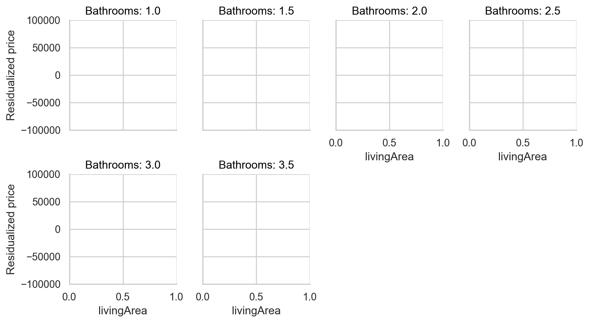
B. 다음은 Bike Sharing in Washington D.C. Dataset를 이용한 질문들입니다.
Data: hour.csv, day.csv
Descriptions: Bike Sharing in Washington D.C. Dataset
아래 코드를 이용해 cleaning 후
bikes는 hourly 데이터셋, bikes_daily는 daily 데이터셋으로 사용합니다.
bikes = pd.read_csv("data/hour.csv")
bikes_daily = pd.read_csv("data/day.csv")
def clean_data(df):
df.rename({"dteday": "date", "cnt": "count"}, axis=1, inplace=True)
df = df.assign(
date=lambda x: pd.to_datetime(x["date"]), # datetime type으로 변환
year=lambda x: x["date"].dt.year.astype(str), # year 추출
day=lambda x: x["date"].dt.day_of_year, # day of the year 추출
month=lambda x: x["date"].dt.month_name().str[:3], # month 추출
wday=lambda x: x["date"].dt.day_name().str[:3], # 요일 추출
)
return df
bikes = clean_data(bikes) # hourly data
bikes_daily = clean_data(bikes_daily) # daily data
B-1 ~ B-3는 코딩없이 기술하는 문제입니다.
B-1. 수업시간에 살펴본 바와 같이, 2011년의 daily 데이터에서, 다음과 같은 요일에 따른 자전거 대여량의 변화를 보았을 때, casual 사용자들과 registered 사용자들은 각각 어떤 특징의 집단이라고 추론해볼 수 있을지 간략히 기술해보세요. (10)
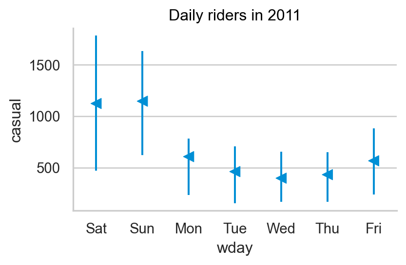
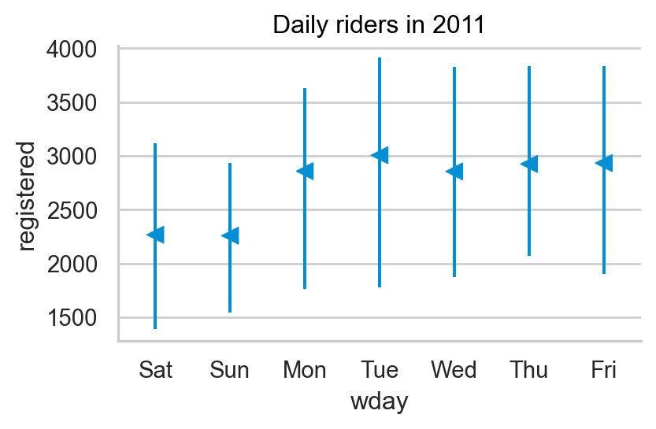
B-2. 마찬가지로, 수업에서 살펴본 바와 같이,
- 왼편 플롯처럼 월별에 따른 자전거 대여량이 변하는데, 다음과 같이 온도로 예측하는 모형을 세운 후
registered ~ temp + I(temp**2)- 그 잔차를 달에 따라 살펴봤을 때 (오른편 플롯), 어떤 추론을 할 수 있는지 온도와 달의 관계를 중심으로 기술해보세요. (10)
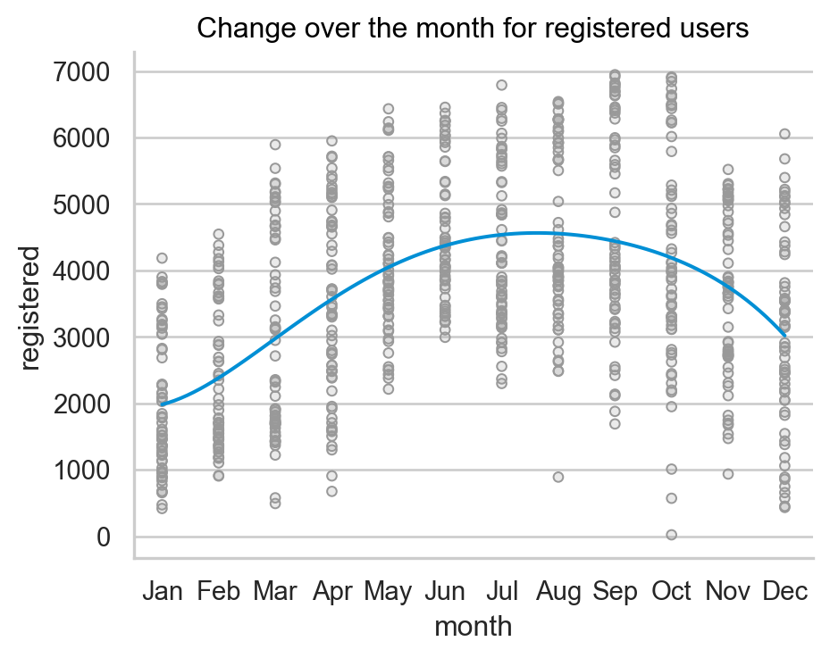
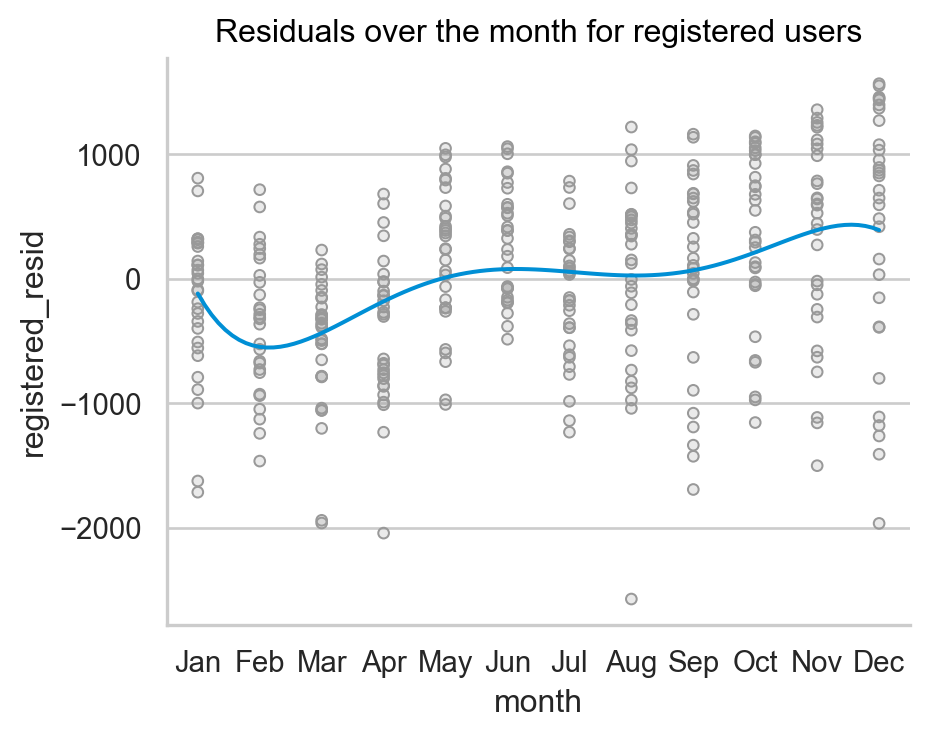
B-3. 수업에서 설명한 바와 같이, casual bikers들에 대해서는 특히나 count 데이터의 특성이 왼편과 같이 잘 나타납니다.
이때, 대여수를 log 스케일로 바꾸면 오른편과 같이 변하는 것을 보았을 때, log 스케일로 바꾸면 어떤 이점이 있는지 대략 설명해보세요. (10)
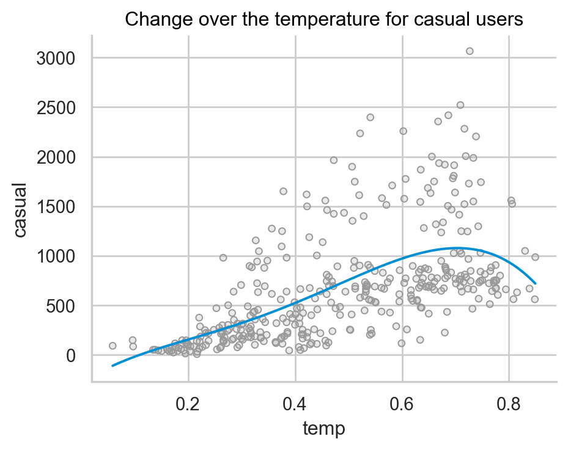
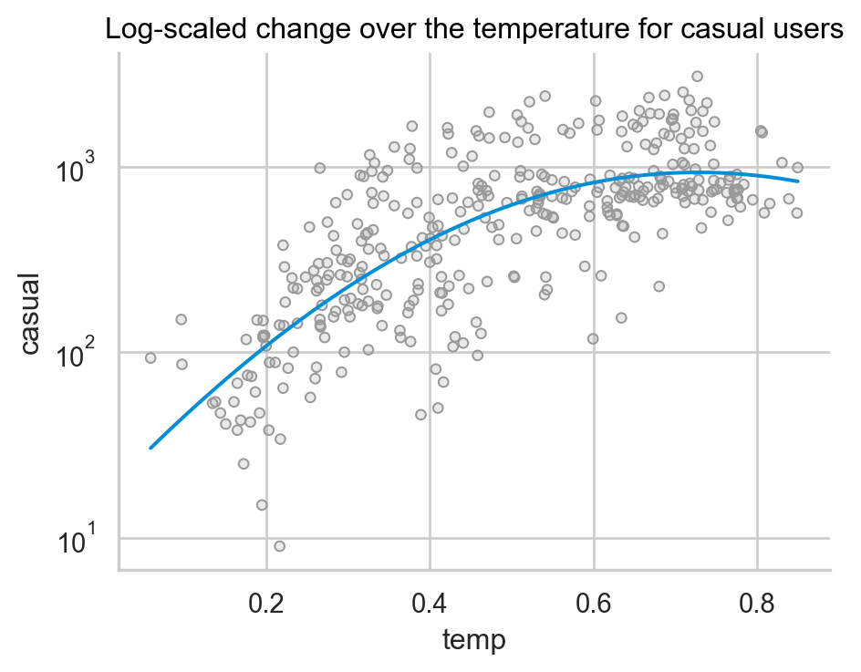
이후부터는 2012년 hourly 데이터셋(bikes)에 대해, 자전거 대여수를 log 변환한 값을 다음과 같이 가공한 후 진행합니다.
bikes = (
bikes.query('year == "2012"') # 2012년 데이터만 사용
.assign(
lregistered = np.log2(bikes["registered"] + 1), # log2 변환
lcasual = np.log2(bikes["casual"] + 1), # log2 변환
)
)B-4. 자전거 대여수가 하루의 시간(hr)에 따라 어떻게 변하는지 rangeplot()을 통해 살펴보세요. (10)
- 이 때, 등록된 사용자들(
lregistered)과 비등록사용자들(lcasual)을 따로 살펴보고, - 이 두 그룹을 따로 분석해야 하는지에 대해 간단히 기술해보세요.
아래 rangeplot() 함수를 써도 되고, 자신만의 rangeplot 함수를 써도 됩니다.
rangeplot()
def rangeplot(df, x, y, color=None, marker="<"):
return (
so.Plot(df, x=x, y=y, color=color)
.add(so.Range(), so.Est(errorbar=("pi", 50)), so.Dodge())
.add(so.Dot(pointsize=8, marker=marker), so.Agg("median"), so.Dodge())
.scale(color="Dark2")
.theme({**sns.axes_style("whitegrid")})
)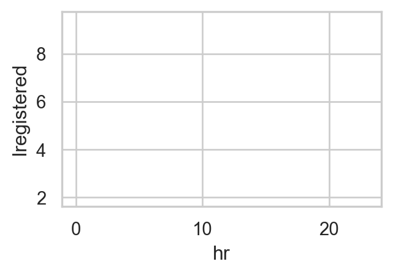
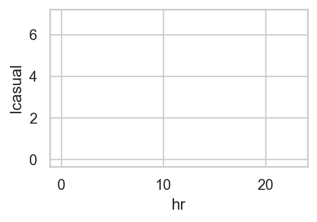
이제부터는 등록된 사용자들(lregistered)에 대해서만 분석합니다.
B-5. (B-4)에서 살펴본 관계가 요일(wday)에 따라 다른지 rangeplot()으로 다음과 같이 facetting하여 나누어 살펴보는데 (10)
- 주말과 평일이 뚜렷이 구분되는 패턴으로 나타남을 확인하고,
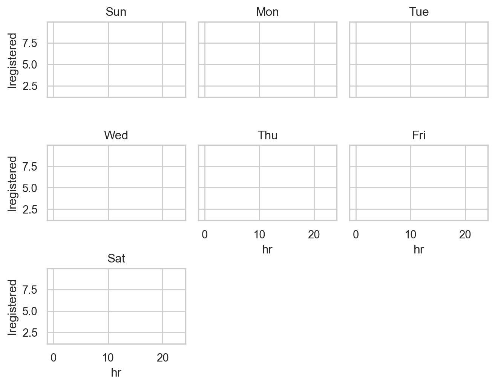
- 공휴일은(
holiday == 1) 요일에 상관없이 주말과 비슷한 패턴으로 나타남을 확인합니다.
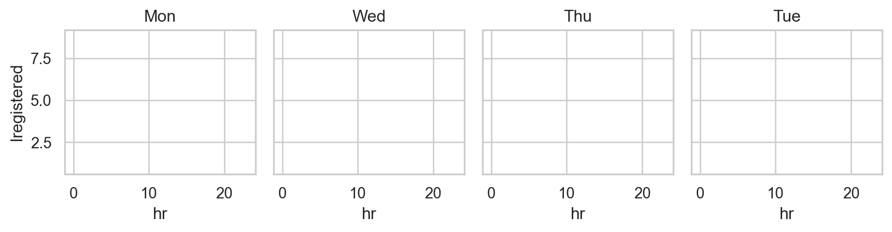
B-6. 이제 주말(토,일)과 공휴일이 0으로 표시되어있는 근무일 여부(workingday)를 다음과 같이 recode합니다. (15)
workingday가 1이면 “workday”로 표시하고, 0이면, “day-off”로 표시하도록 바꿉니다.- 확인차
workingday여부에 따라 “하루 시간(hr)에 따른 자전거 대여수(lregistered)의 변화”를 마찬가지로rangeplot()으로 아래와 같이 살펴보고, - 두드러진 특징을 간략히 기술하고, 왜 이런 패턴이 나타날지 대략 추측해보세요.
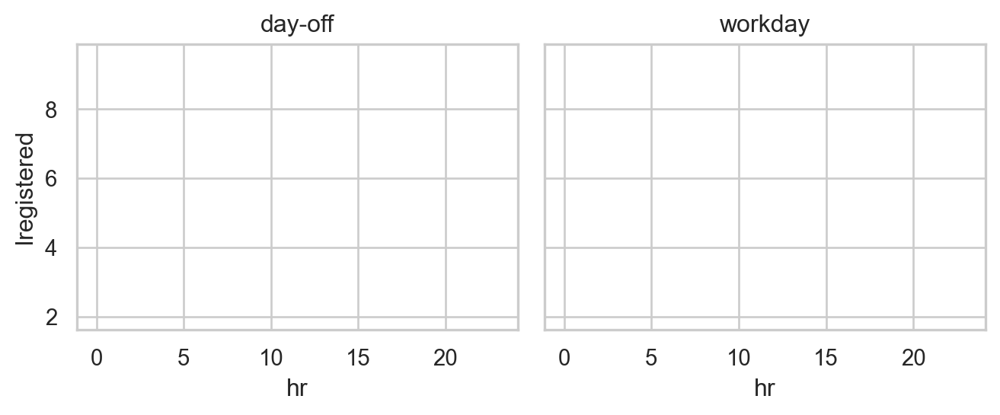
B-7. 시간(hr)에 따른 자전거 대여수(lregistered)의 변화는 다항함수로는 fit하기 어려운 곡선의 형태로 나타나므로 이 패턴을 잘 잡아낼 수 있도록 natural spline으로 fit한 모형을 다음과 같이 만듭니다. (10)
mod_ns = smf.ols("lregistered ~ cr(hr, df=10) * workingday", data=bikes).fit()이 모형에 대해, 예측변수의 다음 값들에 대해 모형의 예측값을 그려보는데, lregistered가 아닌 원래 단위인 대여 수(registered)로 환원하여 예측값을 계산 후 아래와 같이 그려보세요. (디테일은 무시)
lregistered는 \(log_2{(\text{registered} + 1)}\)으로 변환되었습니다.
hr = np.arange(0, 24, 5/60) # 5분 단위로 24시간
workingday = ["workday", "day off"] # 근무일, 휴일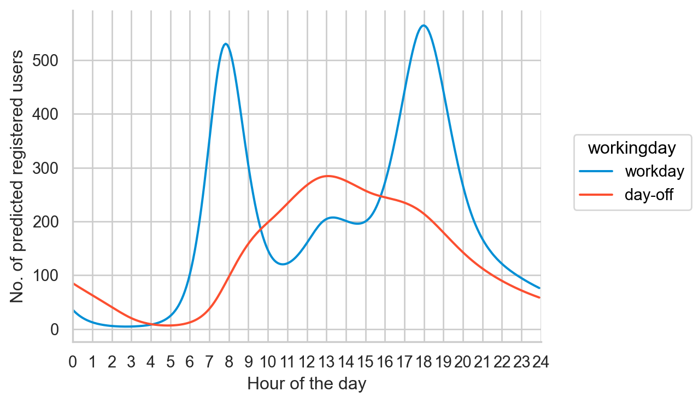
B-8. 기온(temp)에 따른 자전거 대여수(lregistered)의 변화 패턴이 근무일 여부(workingday)에 따라 다른지를 살펴봅니다. (10)
- 아래 플롯과 같이, 기온의 영향력에 대한 패턴이 근무일 여부에 따라 다른지 확인하여(5차 다항함수로)
- 기온(
temp)과 근무일 여부(workingday) 두 변수가 상호작용하는지 판단한 후, 위에서 세운mod_ns모형에 기온(temp) 변수를 추가한 모형mod_ns2를 세웁니다.
(최적은 아니지만) 2차 다항함수의 형태로 가정해 모형을 세워보세요.
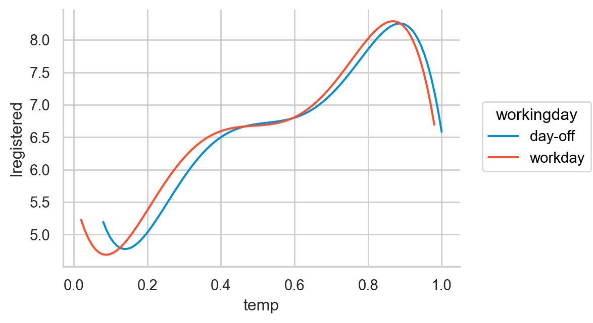
B-9. (B-8)에서 세운 모형(mod_ns2)으로는 “예측되지 않는 자전거 대여수(lregistered)”인 잔차를 구해 데이터에 추가한 후, (15)
- 다음과 같이 달(
month)에 따른 “잔차 평균”의 변화를 bar 플롯으로 살펴보고, 이 플롯이 의미하는 바를 기술해보세요. - 날씨(
weathersit)에 따른 “잔차 평균”의 변화도 Bar 플롯으로 살펴본 후, 플롯이 의미하는 바를 기술해보세요.
날씨(weathersit) 변수에 대한 설명:
1: Clear, Few clouds, Partly cloudy, Partly cloudy
2: Mist + Cloudy, Mist + Broken clouds, Mist + Few clouds, Mist
3: Light Snow, Light Rain + Thunderstorm + Scattered clouds, Light Rain + Scattered clouds
4: Heavy Rain + Ice Pallets + Thunderstorm + Mist, Snow + Fog
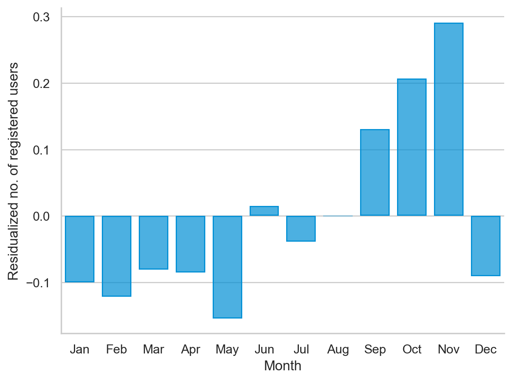
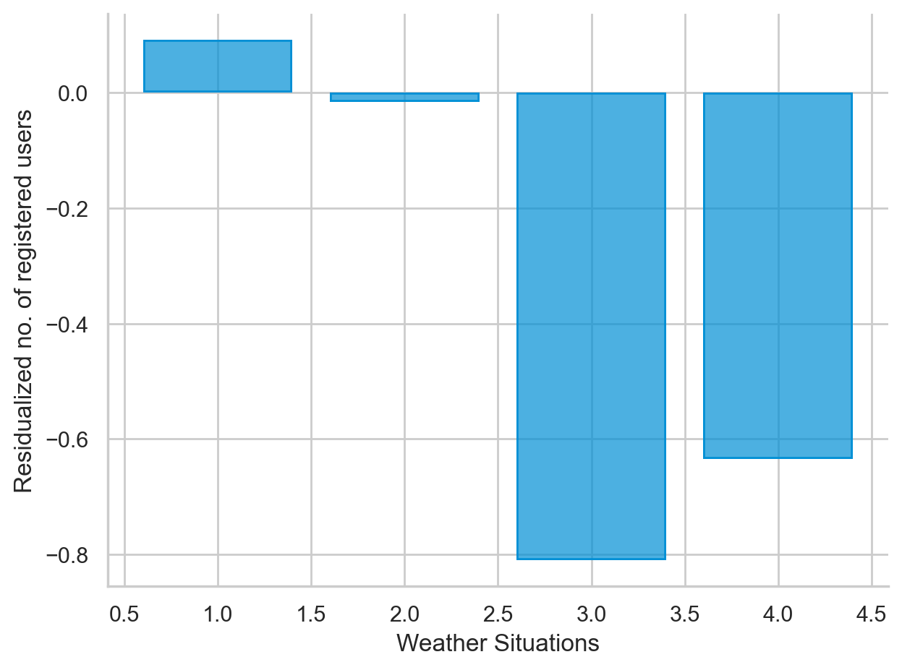
B-10. 자전거 대여수(lregistered)를 예측하는 모형에 예측변수를 추가하는 소위 “위계적 분석”을 다음과 같이 수행합니다. 예측변수들은 앞서 분석한 결과를 바탕으로 적절히 변형해서 모형에 추가합니다. (10)
- mod1: 시간(
hr)만 포함한 모형 natural spline으로 추가(cr(hr, df=10)) - mod2: 시간(
hr)과 근무일 여부(workingday)를 포함한 모형 상호작용 여부을 고려해서 추가 - mod3: 시간(
hr), 근무일 여부(workingday), 온도(temp)를 포함한 모형 온도는 2차 다항함수로, 상호작용 여부을 고려해서 추가
- 모형의 예측값을 원래 단위인 자전거 대여 수로 환산한 후, 원래 단위로 각 모형에 대한 \(R^2\)값을 표시하고,
- 예측변수의 추가에 따른 \(R^2\)값의 증가분을 살펴보고, 각 예측변수들의 공헌도에 대해 간략히 기술하세요.
B-11. Casual biker(lcasual)들에 대해서도 동일한 분석을 하는데, 모형은 B-10에서 registered bikers에 대한 모형과 동일하다고 가정하고, (5)
- 모형의 예측값을 원래 단위인 자전거 대여 수로 환산한 후, 원래 단위로 각 모형에 대한 \(R^2\)값을 표시하고,
- 예측변수의 추가에 따른 \(R^2\)값의 증가분을 살펴보고, 각 예측변수들의 공헌도에 대해 간략히 기술하세요.